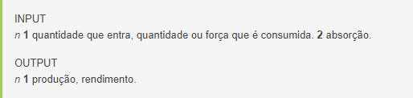

INPUT E OUTPUT NO APRENDIZADO DE IDIOMAS
Hoje vamos falar de dois conceitos muito importantes que todo estudante de idiomas deve conhecer: input e ouput. Antes de qualquer coisa, vamos dar uma olhada no sentido original de cada uma dessas palavras:

Na área da aprendizagem de idiomas, essas palavras têm um sentido semelhante. Input é tudo aquilo que você lê ou escuta (palavras, frases, diálogos, etc.). Output é tudo aquilo que você produz (palavras, frases, diálogos, etc.) tanto na forma oral quanto escrita. Assim, se considerarmos as quatro habilidades envolvidas na aprendizagem de idiomas (fala, compreensão oral, escrita e leitura), veremos que a compreensão oral e a leitura são atividades de input, enquanto que a escrita e a fala são atividades de output.
O importante nesses dois conceitos é entender a relação existente entre eles, pois é por meio dessa relação que falamos nossa língua nativa e é por meio dela que aprendemos outras línguas, como o japonês. Conforme você recebe input, ou seja, conforme você lê, compreende e absorbe palavras, frases e diálogos, essas informações vão aos poucos sendo armazenadas no seu cérebro, como se ele fosse uma imensa biblioteca. Quando você produz (fala ou escreve) uma palavra, frase ou estrutura, seu cérebro vasculha as informações armazenadas nessa “imensa biblioteca” em busca das palavras, frases e estruturas necessárias. Por causa disso, você jamais conseguirá produzir (falar ou escrever) uma palavra que nunca leu ou ouviu. Se você nunca ouviu ou leu a palavra “elefante”, por exemplo, jamais conseguirá falar ou escrever a palavra “elefante”, pois seu cérebro simplesmente não conhece a palavra, essa informação não está armazenada na sua “biblioteca”. Isso acontece tanto no português, que é sua língua nativa, quanto no japonês, que é o idioma que você está aprendendo. Assim, antes de produzir qualquer palavra ou estrutura gramatical em japonês, você precisa primeiro ler ou ouvir essas palavras ou estruturas.
É preciso não somente entender, mas também aplicar os conceitos de input e output aos seus estudos de japonês. Se você foca seus estudos mais em falar e escrever (atividades de output) e não está tendo sucesso, provavelmente o problema é que você está adquirindo uma quantidade muito pequena de palavras e frases através de atividades de leitura e compreensão oral (input). De fato, o ideal é que para cada hora de prática de fala ou escrita, você pratique pelo menos três horas de compreensão oral ou leitura. Assim, se você pratica duas horas de conversação por semana, por exemplo, o ideal seria que você praticasse sua compreensão oral durante pelo menos seis horas por semana.
Se você parar e pensar um pouco, verá que a grande maioria dos métodos tradicionais, principalmente os métodos usados em salas de aula, usa o caminho contrário, forçando os alunos a falar a escrever (atividades de output) muito mais do que ler e ouvir (atividades de input). Os professores normalmente são forçados a falar o mínimo possível, enquanto os alunos são encorajados a falar e escrever o máximo possível. O resultado é que, por ainda não terem recebido a quantidade necessária de input, ou seja, por não terem armazenado palavras, frases e estruturas suficientes, os alunos têm um “repertório” muito pequeno à sua disposição e acabam falando e escrevendo pouco e de forma errada, o que prejudica tanto os próprios alunos quanto seus colegas, que acabam sendo expostos a um input de baixa qualidade e em pouca quantidade (quando um aluno tem que ficar escutando outro aluno falar japonês de forma errada, ele acaba prejudicando seu aprendizado).
Assim, a partir de hoje, tente aumentar o tempo que você passa lendo e escutando japonês, de modo que ele seja pelo menos três vezes maior do que o tempo que você passa falando e escrevendo. Em futuras lições do nosso curso, você aprenderá como aumentar esse tempo sem grandes esforços, mas por enquanto tente fazer isso por conta própria e veja quais são os resultados. Até a próxima e bons estudos!
Abraços e até a próxima!